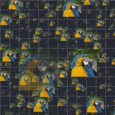

Campo de dispersão

Dispersa cópias da camada em um campo 3D infinito, ocultando a camada original, e permite simular movimento em três dimensões no campo com animação de quadros-chave.
Configurações
| Configuração | Tipo | Intervalo | Padrão |
|---|---|---|---|
| Posição | Ponto (X, Y) | -99999 a 99999 | 0, 0 |
| Posição Z | Número | -99999 a 99999 | 0 |
| Densidade | Número | 0 a 1 | 0.3 |
| Evolução | Número | -9999 a 9999 | 0 |
| Semente | Número | 0 a 9999 | 0 |
| Escala | Número | 0.05 a 20 | 1 |
| Tamanho | Número | 0 a 10 | 0.5 |
| Ângulo | Ângulo | -3600° a 3600° | 0° |
| Variação de tamanho | Número | 0% a 100% | 50% |
| Variação de ângulo | Número | 0% a 100% | 0% |
| Quantidade | Número | 0 a 40 | 15 |
| Esmaecimento | Número | 0% a 100% | 100% |
| Alfa | Número | 0% a 100% | 100% |
| Folga | Número | 0% a 100% | 100% |
| Modo de mesclagem | Opção | Normal, Adicionar, Tela, Multiplicar, Clarear, Escurecer, Sobrepor, Diferença | Normal |
| Coloração | Opção | Nenhuma, Aleatória, Profundidade | Nenhuma |
| Cor 1 | Cor | – | #FF55AA |
| Cor 2 | Cor | – | #55AAFF |
| Cor 3 | Cor | – | #FFAA55 |
| Travar luminância | Ativado ou desativado | – | Ativado |
| Travar saturação | Ativado ou desativado | – | Desativado |
| Interpolar matiz | Ativado ou desativado | – | Desativado |